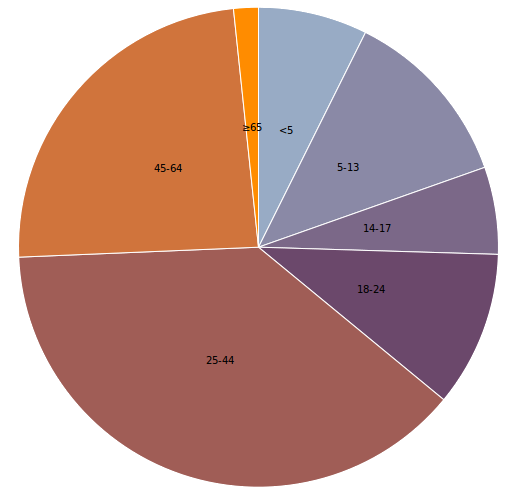
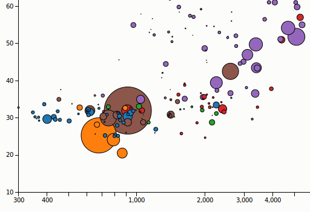
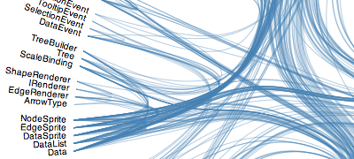
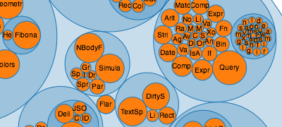
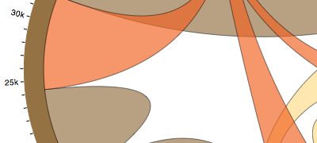
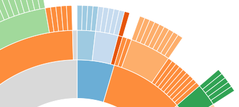
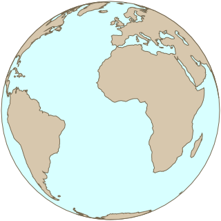
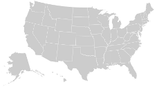
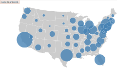

Avantatges de treballar amb tiles
- Fàcil
- Molts examples, stàndards, dades i llibreries
- Capacitat de representar moltes dades
- Pre-processament de les dades
Problemes de treballar amb tiles
- Molt espai al servidor
- Poca flexibilitat en les projeccions
- Dificultats en la interactivitat
- Integració més clàssica amb els altres elements de la web
D3
- Orientat a la representació de dades
- Basat en la manipulació del DOM dels documents
- Costa entendre què és sense veure'n exemples ▼
Gràfiques senzilles...

▼
...o complexes
Wealth & Health of nations

▼
D3
- Software lliure
- HTML5 / CSS3
- Flexibilitat absoluta
D3
- Poca documentació
- Milers d'exemples
- Corba d'aprentatge relativament pronunciada
D3 - Com funciona
Manipulació de nodes DOM:
d3.select("body").append("div").text("Geoinquiets");
D3 - Com funciona
Encadenament de mètodes:
d3.select("body")
.append("div")
.style('position', 'absolute')
.text("Geoinquiets");
D3 - Com funciona
data():
var llocsTrobades = ['Centro Galego','Casa Orlandai','CanteraTech'];
d3.select("body")
.selectAll("div")
.data(llocsTrobades) //Executa per a cada element
.enter() //Si la selecció era nul·la, afegeix l'element per data
.append("div")
.attr("class", "lloc")
.text(function(d) {
return d;
});
D3 - què ofereix
- Càlcul d'escales i temps
- Manipulació d'SVG/Canvas
- events
- transicions
D3 - què ofereix
Layouts




D3 - què ofereix
Mapes

- unes vint projeccions
- GeoJSON i TopoJSON
D3 - què ofereix
TopoJSON
- Codifica topologia enlloc de geometries
- Redueix la mida fins al 80%
- Permet simplificacions de polígons sense problemes a les fornteres
- Format propi
D3 - falta millorar
- Documentació/tutorials
- Etiquetes als mapes
- Estils
- Té moltes més possibilitats sense explorar
Kartograph
- Orientat a mapes
- Maneja estils amb facilitat
- Bona corba d'aprenentatge
- Alt nivell
- Bugs / Menys comunitat
Creant un mapa amb D3 pas a pas
Creem un mapa bàsic

- Includes
- Path i SVG
- Càrrega del JSON
- Dibuix del mapa
Veure l'exemple
Afegim simbols

- Queue per carregar més d'un arxiu
- Radi i ordre com a funcions
- Canvis en la transició
Veure l'exemple
El logo de Geoinquiets
- Barreja d'elements SVG
- Traslació de l'origen de la projecció
►